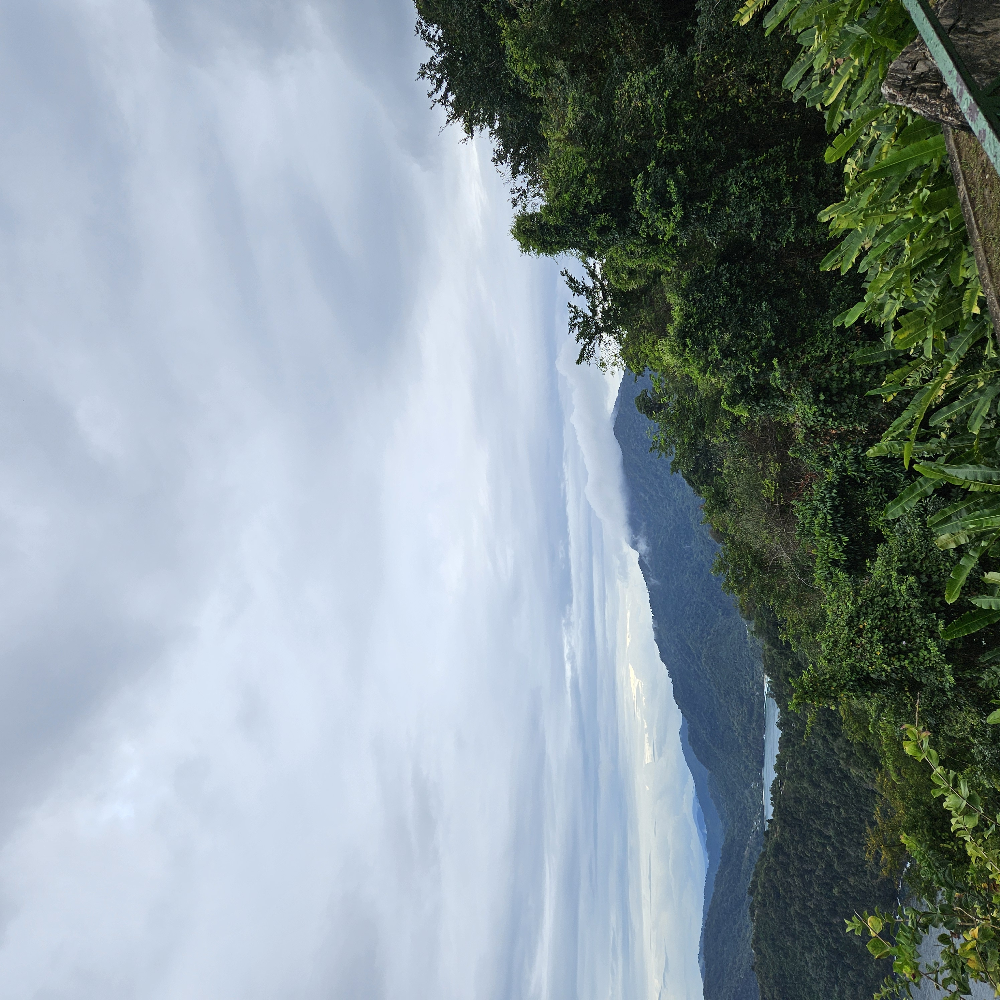
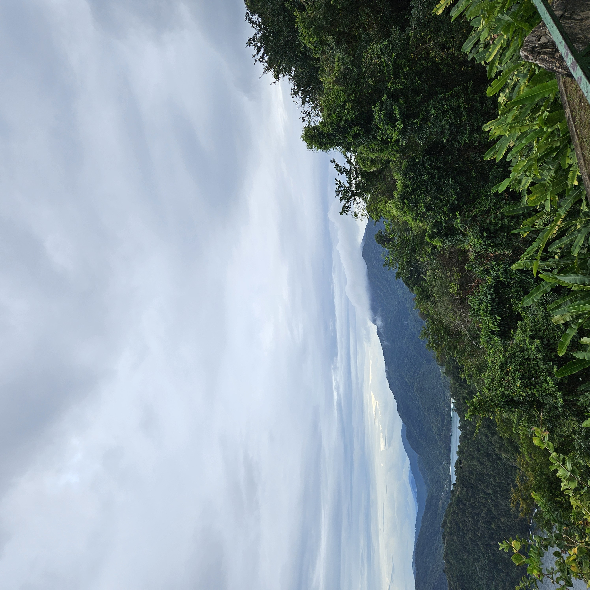
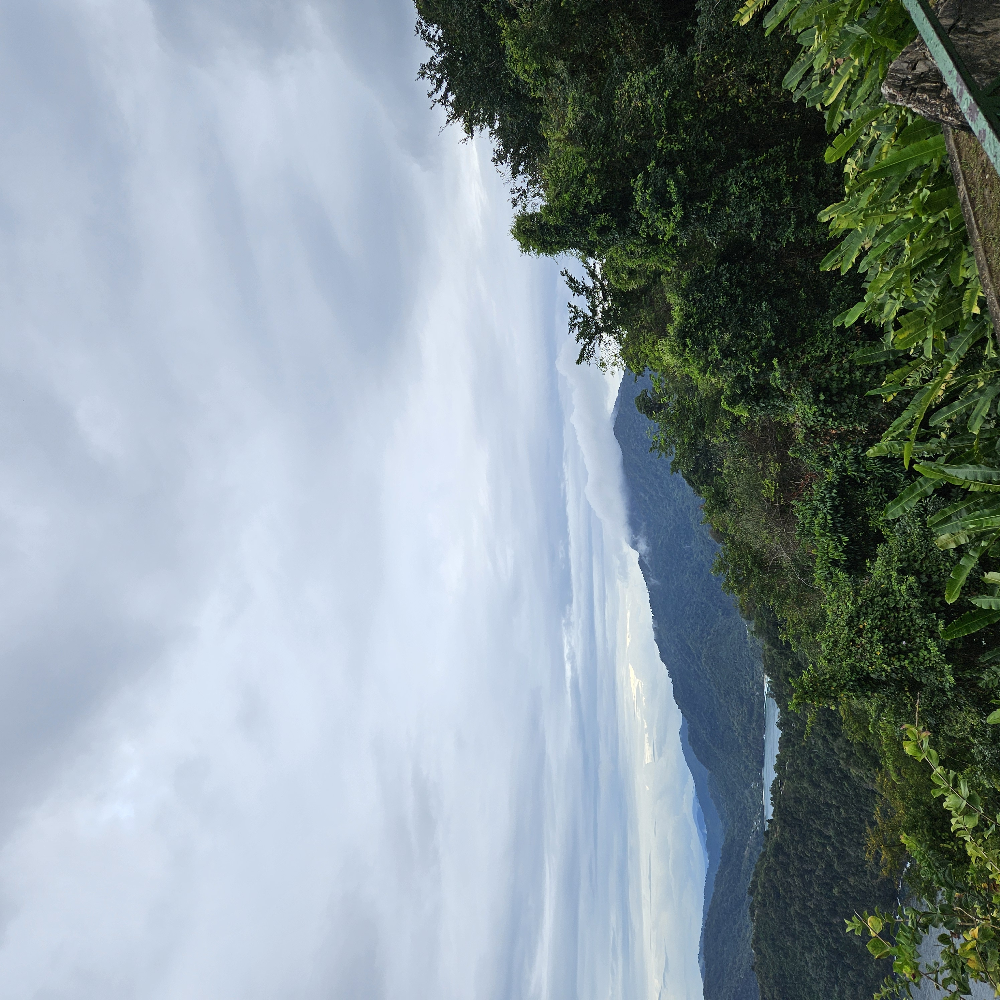

My name is Katelyn. I am 19 years old and I am excited to learn more during this challenge.
My journey with Kode with Klossy started in 2021 by attending the web development summer camp where I learnt HTML,CSS, and JavaScript. The following year I did the data science summer camp, where I learnt SQL and Python.
I love learning French, reading fantasy books, and exploring new cultures.Also I enjoy painting and journaling to destress. Recently, I took a pottery class and found it to be a great way to express my creativity. I enjoy late night bike rides and swim sessions.
Some Fun Facts About Me

Some websites that I enjoy.